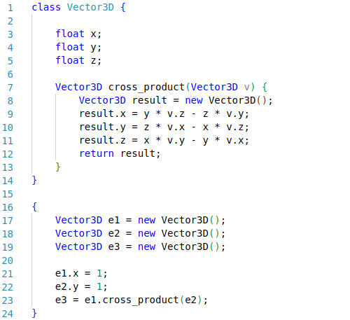
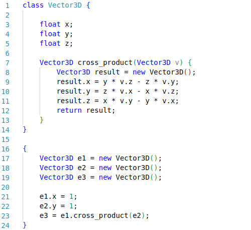
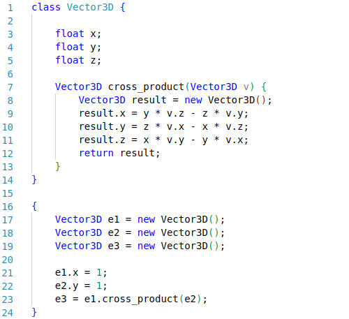

Contact
ryan.delayat@grenoble-inp.org
Experiences
> Software development at
Lichens in parallel of my studies, September 2023 - January 2024
I'm continuing to develop the application I created during my internship, on a part-time basis. I'm continuing as long as I don't start my end-of-study internship.
> Software development and data analysis internship at
Lichens, 10 weeks, summer 2023
During this internship, I developed a web application
to visualize and exploit files resulting from measurements
on an interactive map. I also deployed this application on a
VPS allowing easy access for company members.
Projects
> Creation of a GPS track editing application
This application can be used to create a GPS track from 0,
or to modify an existing one. It features a number of tools, such as zone selection,
smoothing of sections, calculation of simple statistics (e.g. speed or elevation
over time), automatic correction of points, account creation and
track uploading.

 This project uses Python with Django for the back-end and Javascript
on the front, with Leaflet for displaying map data.
This project uses Python with Django for the back-end and Javascript
on the front, with Leaflet for displaying map data.
> Building a compiler for a Java sub-language
This is a software engineering project carried out
during the month of January 2023 in a team of 5. We created a compiler
for a sub-language of Java, allowing more or less complex code to be compiled.
 


> Creating a GUI library
The aim of this project is to create a library that will
enable a programmer to create graphical interfaces, such as windows, buttons, sliders...
Resume
To see my resume, click on this button :
Open